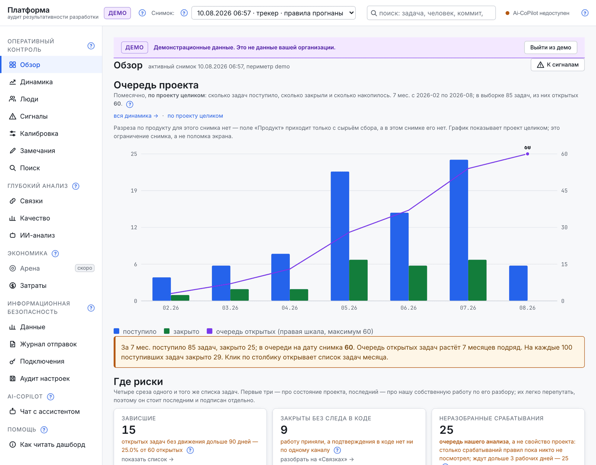
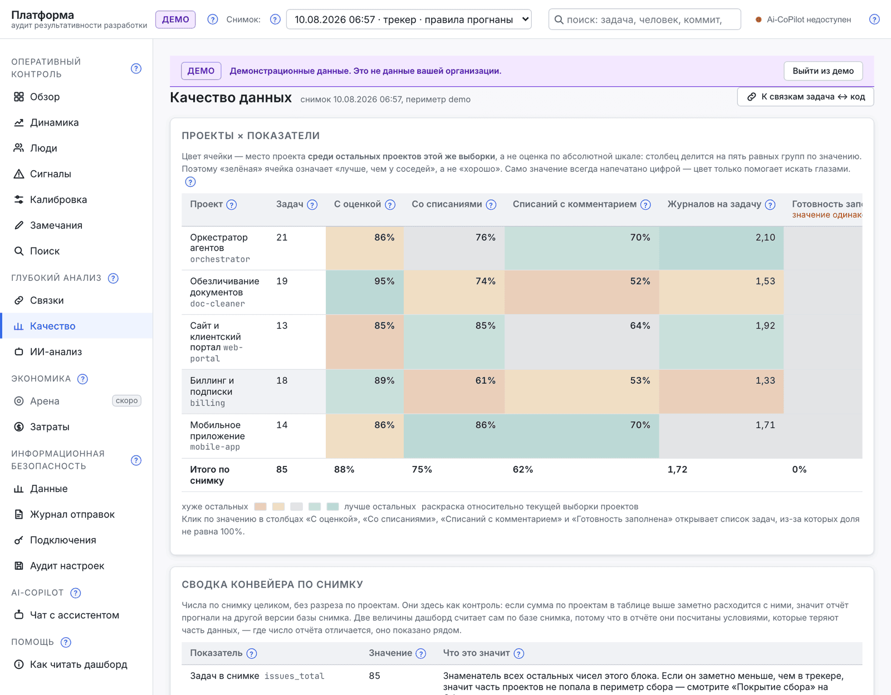
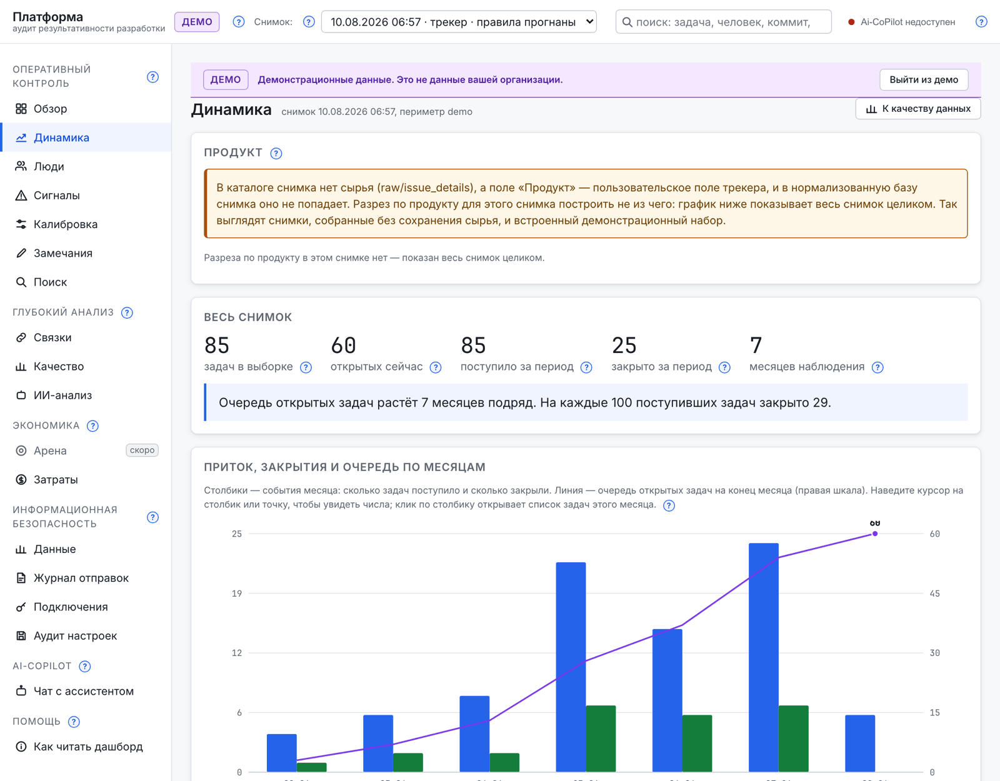
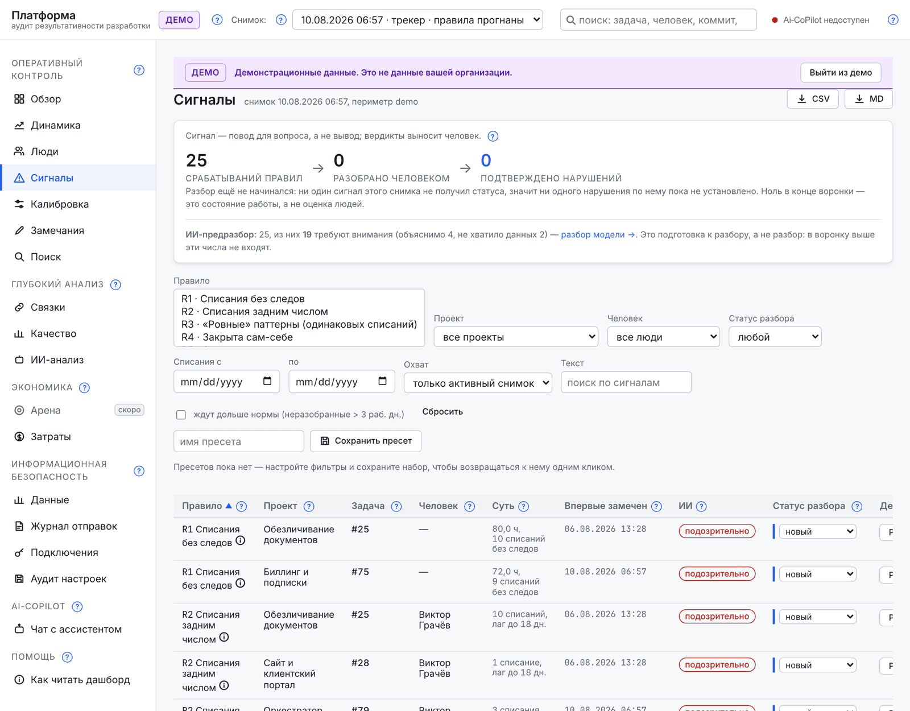
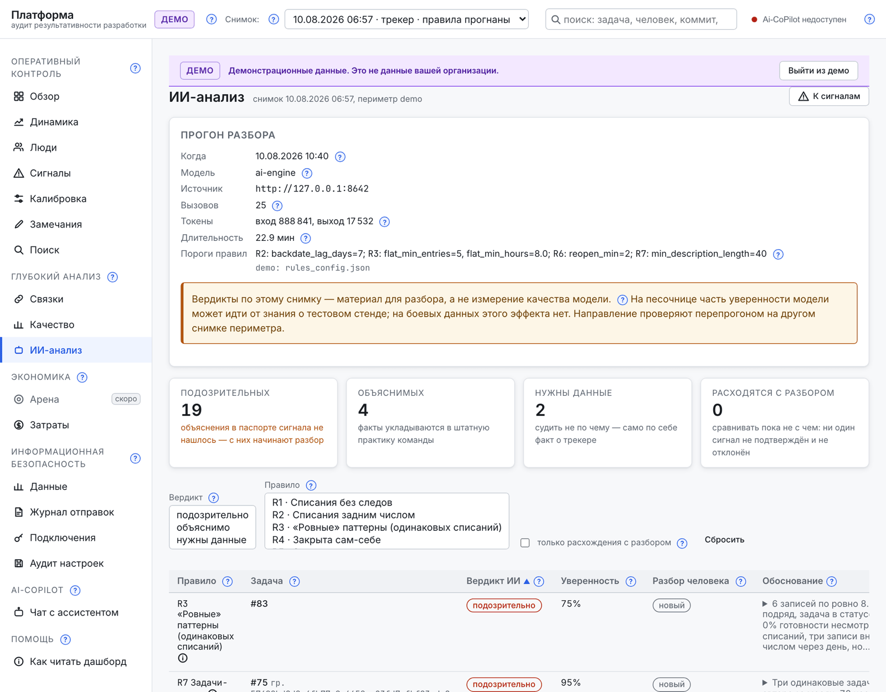
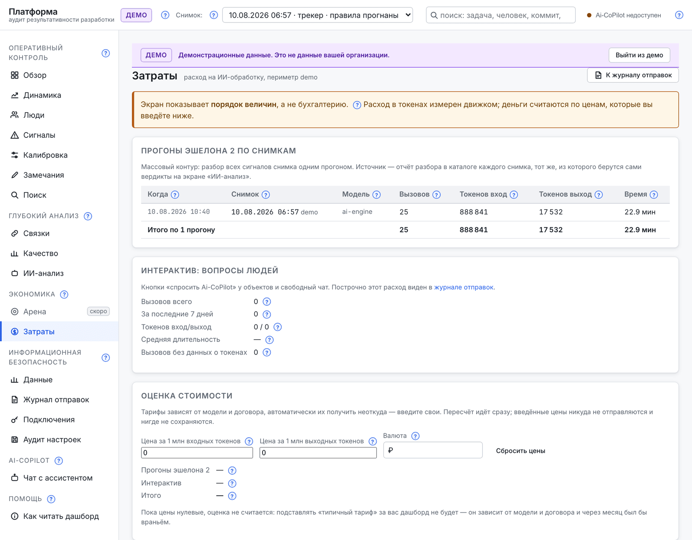

- Роль
- Автор продукта. Придумал, спроектировал архитектуру, написал код и методику разбора, довёл до пилота у заказчика.
- Стадия
- MVP в пилоте. Работает на боевых данных заказчика; развивается.
- Стек
- Python · FastAPI · Jinja2 · htmx · SQLite (WAL, FTS5) · Docker
- Слои
- Сбор · снимки · правила · ИИ-разбор · витрина · разбор человеком
- ИИ
- Разбор сигналов, диалоговый ассистент по данным, журнал всех отправок
- Данные
- Заказчик, его системы и данные — под NDA. Все экраны на странице сняты на встроенном демонстрационном наборе синтетических данных.
Проблема
Руководитель IT-компании спрашивает: чем занята команда, кто тянет, а кто нет, почему эта задача стоила триста часов, — и получает мнения и доклады. Не потому, что данных нет: они есть, просто лежат в разных системах и никто их не сводит. Трекер знает списания. Git знает изменения. Вопрос «подтверждено ли оплаченное время следом в коде» не задаётся не потому, что он неудобный, а потому, что до него физически некому дотянуться.
Обычный ответ на это — обследование силами аналитика: недели ручной работы по одному проекту. Я такое обследование проводил (кейс аудита холдинга) и знаю цену: результат честный, но разовый и не масштабируемый. DevLedger родился из желания сделать эту работу регулярной и автоматической — по каждому проекту компании, а не по одному избранному.
Решение: управленческий контур
Платформа подключается к системам, где работа уже живёт — трекер задач и репозитории кода, — и ничего не просит менять в работе команды: ни новых полей, ни отчётов, ни опросов. Она снимает неизменяемый слепок данных на дату и дальше работает с ним. Слепок нельзя переписать задним числом, поэтому любой вывод можно перепроверить и через полгода, даже если в трекере всё давно поправили.

Как устроено
Пять слоёв, каждый со своей зоной ответственности:
- Источники. Трекер задач и репозитории — строго read-only учётной записью. Что закрыто правами, честно показано на экране, а не молча пропущено.
- Снимки. Неизменяемые слепки на дату. История сохраняется — отсюда берётся анализ «как было / как стало».
- Анализ. Два эшелона: машинные правила ловят срабатывания, ИИ-разбор читает паспорт объекта и отбирает то, что стоит внимания.
- Витрина. Экраны руководителя: обзор, динамика, люди, связки, качество, сигналы, экономика.
- Человек. Воронка «сигнал → разбор → вердикт». Решение принимает руководитель, разметка сохраняется.
Конвейер сбора и витрина — два отдельных приложения. Витрина смонтирована к каталогу снимков только на чтение на уровне контейнера: даже при ошибке в коде она физически не может испортить собранные данные.
Что видит руководитель
Продукт устроен вокруг вопросов, которые руководитель задаёт и так — только теперь на них есть ответ из данных.
Как поставлены задачи. Теплокарта «проекты × показатели» — это диагноз процессу постановки, а не людям: где задачи приходят без оценки, где списания идут без комментария, где задачи возвращаются постановщику и сколько это уже стоило.

Какого качества код по задаче. Платформа машинно связывает оплаченное время с изменениями в репозитории — этого нет в трекерах «из коробки». Распознаются конвенции привязки в сообщениях коммитов, вторым каналом идут журналы интеграции с репозиторием. Задача с сотнями списанных часов и нулём изменений кода — это повод для вопроса, который раньше некому было задать.
Что происходит с проектом. Очередь задач по месяцам, сегменты риска, изменения к прошлому периоду — цифрой и с раскрытием до конкретной задачи в один клик.

Сигнал — повод для вопроса, а не приговор
Это главное продуктовое решение, и оно принято до первой строки кода. Система не выносит вердиктов о людях. Она показывает срабатывания правил — списания задним числом, задачи-клоны, часы без следа в коде, — и проводит их через воронку «срабатывание → разбор → вердикт», где вердикт выносит человек, а разметка сохраняется вместе с причиной.
Отсюда следует свойство, ради которого продукт и строился: кадровые и денежные решения становятся защитимыми. За каждым выводом стоит цепочка «правило → факты → разбор → решение конкретного руководителя», а не «система показала».

ИИ-разбор стоит перед человеком и решает задачу объёма: модель читает паспорт каждого сигнала и отделяет то, что укладывается в штатную практику команды, от того, чему объяснения не нашлось. Из тысяч срабатываний руководитель смотрит десятки — с обоснованием по фактам, а не с оценкой «хорошо/плохо».

Петля калибровки
Правила анализа не высечены в камне. Точность каждого правила считается из разметки людей — доля подтверждённых среди разобранных, — и видно, какое правило шумит. Правки порогов и формулировок версионируются, а эффект каждой правки замеряется на следующих снимках. Пороги меняются по данным, а не по мнению, и история этих изменений остаётся.
Информационная безопасность: куда данные ходят и куда не ходят
ИБ здесь не приложение к продукту, а условие, при котором продукт вообще пускают внутрь компании. Поэтому контур описан явно:
- Сбор — read-only учётная запись, письменный перечень снимаемых данных, сбор по расписанию, журнал запросов. Запись в системы компании не предусмотрена как маршрут.
- Витрина — целиком внутри контура: ни одного внешнего запроса из браузера, ни шрифтов, ни библиотек, ни аналитики.
- ИИ-разбор — единственный выход за пределы платформы, и он включается только после решения службы ИБ; до этого маршрут выключен. Наружу уходит паспорт объекта — выдержки фактов, а не исходники.
- Журнал отправок — всё, что уходило в модель, зафиксировано построчно. Это готовый фундамент для требований ИБ, а не обещание.
- Обезличивание перед отправкой опирается на тот же подход, что и мой Pseudonymizer: шлюз, без которого корректная работа с внешними моделями в корпоративном контуре невозможна.
- Демо-режим на синтетических данных — продукт можно показать кому угодно, не раскрывая данные компании. Все иллюстрации на этой странице сняты именно так.
Отдельно — прозрачность экономики самого инструмента: сколько стоил прогон анализа, какая модель, сколько токенов. Расходы на инструмент не смешиваются с расходами на разработку, которую он измеряет.

Инженерные решения
Офлайн-сборка образа. Контур заказчика может не иметь интернета вообще, поэтому все зависимости вендорятся заранее и образ собирается без сети, с проверкой хешей. Перенос — файлом.
Отказ от SPA — сознательный. Сервер рендерит HTML, интерактив добавляет htmx, сборки фронтенда нет вовсе. Шесть прямых зависимостей на весь бэкенд. Альтернативы — React/Vue, Datasette, Streamlit, Grafana поверх SQLite — рассматривались и отклонены, обоснование по каждой записано. В контуре, куда нельзя донести npm, это решение окупается на первом же развёртывании.
Стабильная идентичность сигнала. Ключ сигнала — хеш от правила и участвующих сущностей, а не идентификатор строки. Поэтому разметка переживает пересборку снимков: один и тот же сигнал в трёх снимках остаётся одной карточкой с историей, а не тремя новыми.
Персональный разрез закрыт двумя ключами сразу. Экран «Люди» появляется, только если включён и функциональный флаг, и роль. Иначе пункта меню нет вовсе, а маршрут отвечает отказом. Инструмент, который смотрит на людей, обязан иметь предохранитель.
Объём и темп. 82 модуля и 38 тысяч строк приложения, 110 шаблонов, 37 групп маршрутов — и 1191 тест, включая проверки, что секреты не попадают в HTML. От первого коммита до работающего MVP — две недели и 120 коммитов, в одиночку. Это и есть практическая демонстрация того, о чём весь остальной сайт: агентная разработка меняет не качество кода, а достижимый за две недели масштаб.
Границы: честно про объём и риски
Это MVP, а не коробочный продукт. Ролевая модель пока сведена к одному пользователю с полными правами — заготовка под роли в коде есть, полноценного разграничения нет. Анонимизация персональных данных в интерфейсе запланирована, но не сделана. Экран сравнения моделей — заглушка. Тесты гоняются локально и в общий конвейер сборки не подключены. Продукт проверен на двух периметрах одного заказчика — это пилот, а не отраслевая выборка, и заявлять статистику эффекта я пока не могу: цифры появятся после замера.
Числа обследования, на которых продукт проектировался, остаются под NDA и на этой странице не приводятся. Всё, что вы видите на экранах, — встроенный синтетический набор.